Флешбек: папа с банковскими бумагами
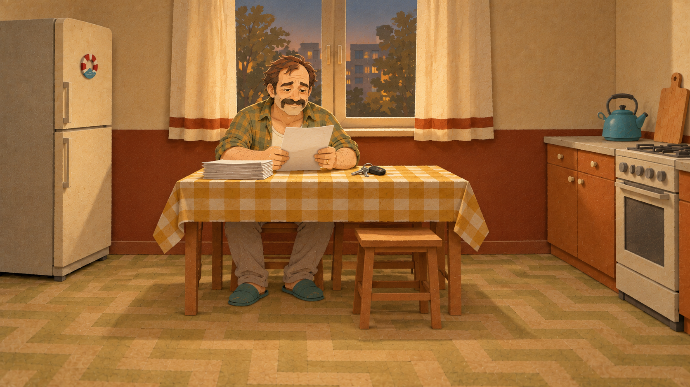
e4_flash_papers · 1672×941 · A
Лицо и кухня сохранены, бумаги и ключи читаются. Ступни около нижней пятой; центральная зона титров свободна.
22/22 ·20 основных +2 дополнительных ·5:33–8:44 · встроенный image_gen · PNG без апскейла
Изображения этого этапа ожидают вашего просмотра. Нажмите на кадр, чтобы открыть исходный PNG.

e4_flash_papers · 1672×941 · A
Лицо и кухня сохранены, бумаги и ключи читаются. Ступни около нижней пятой; центральная зона титров свободна.
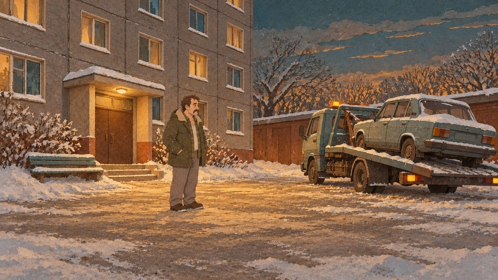
e4_car_taken · 1672×941 · A
Зимний двор без тополя, папа в пальто и ботинках, эвакуатор и седан. Машина частично обрезана справа; фонарь эвакуатора жёлтый.
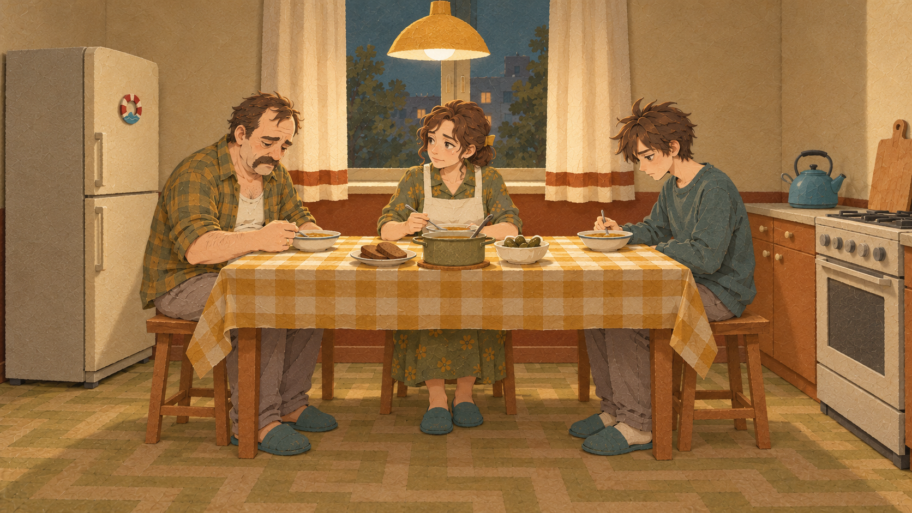
e4_silent_dinner · 1672×941 · A
Три узнаваемых героя и нужные взгляды. Ступни в нижней полосе; добавлены суп, хлеб и соленья.
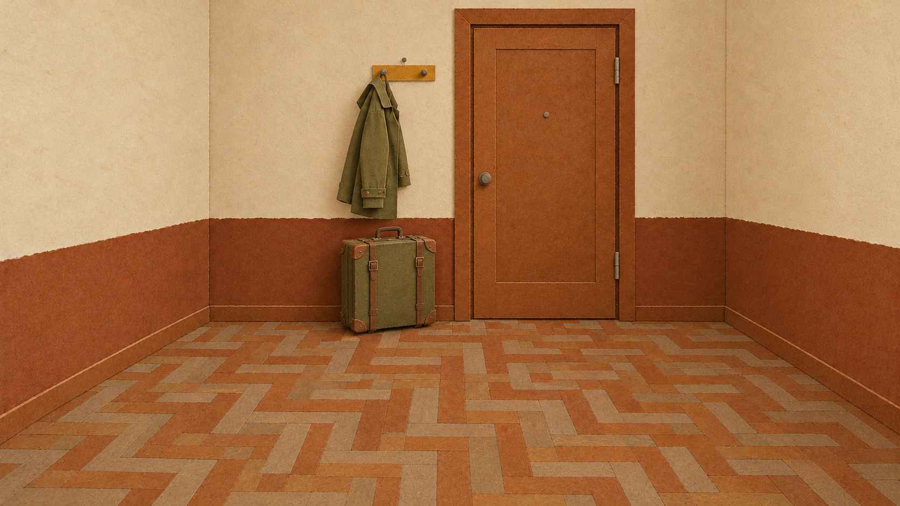
e4_suitcase · 1672×941 · A
Исправлено на настоящую прихожую: входная дверь, одно пальто и пустой крючок, чемодан. Кровать, стол и окно убраны; нижняя пятая свободна.
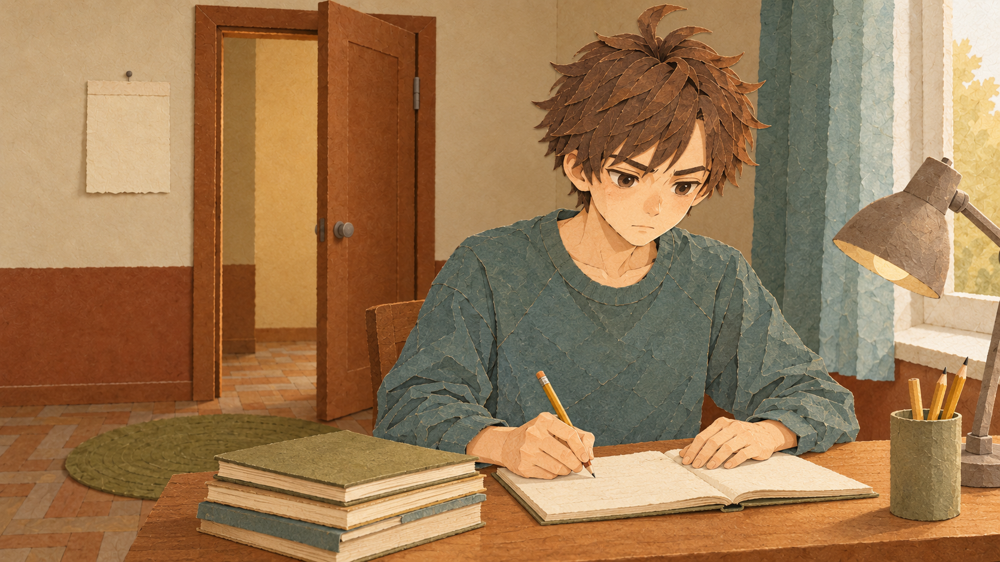
e4_straight_a · 1672×941 · A
Вторая попытка: календарь полностью кремовый, лицо крупное, 15-летний Саша в бирюзовом. Кисти и тетрадь частично в нижних20%.

e4_warn_kitchen · 1672×941 · A
Нужные эмоции и жесты, кухня и одежда совпадают. На газете мелкие штрихи вместо полностью пустых серых полос; одна тапочка около нижних20%.
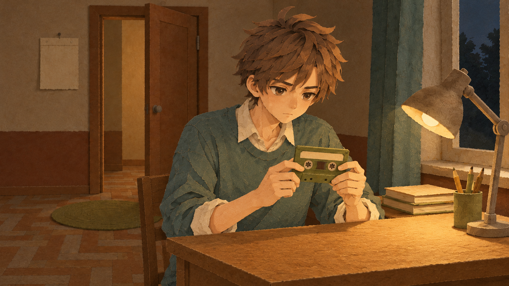
e4_cassette_night · 1672×940 · A
Лицо и кассета крупные, красного нет, ночной свет лампы. Кремовая рубашка под бирюзовым свитером добавлена относительно возрастного листа.

e4_briefcase · 1672×941 · A
Папа складывает пустые бумаги в портфель, Саша в дверях. Портфель и стопка частично ниже75%; для субтитров остаётся фронт стола.
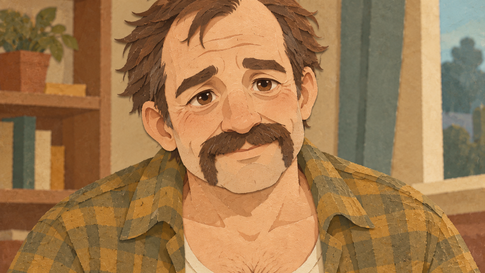
e4_papa_look_cu · 1672×941 · A
Крупное узнаваемое лицо и усы подковой, мягкий взгляд. Волосы сверху кадрированы, добавлена полка с книгами и растением; дальний фон мягче основного лица.
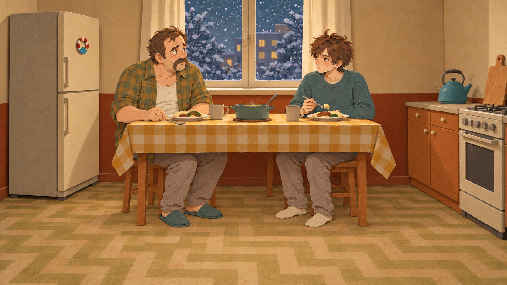
e4_winter_fork · 1672×941 · A
Исправлено: папина вилка опущена на стол рядом с тарелкой. Композиция, лица и зимний свет сохранены. Рукой папа ещё касается ручки вилки.

e4b_pc_floor · 1672×941 · A
Три героя, открытый старый системник, пустые экран и счёт. Системник и снятая панель входят в нижнюю полосу; Костя с добавленной отвёрткой.
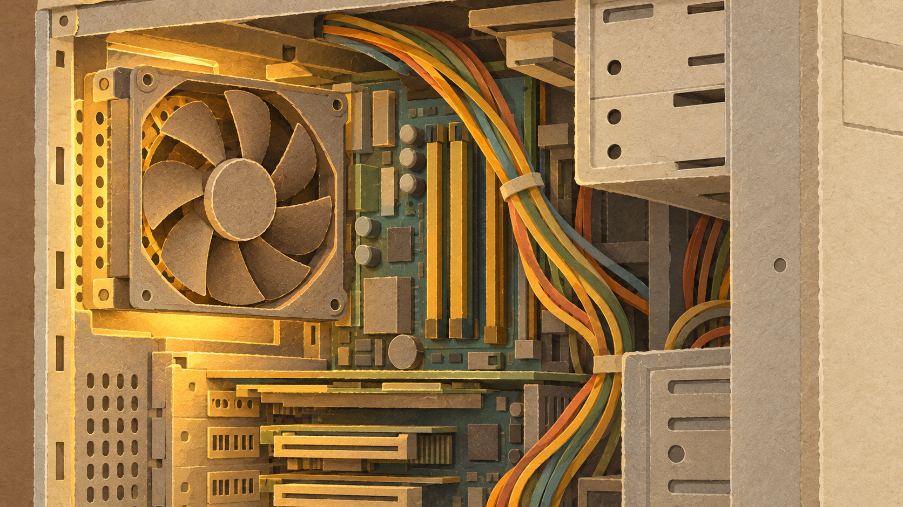
e4b_pc_cu · 1672×941 · B
Крупно открытый системник из общей сцены, вентилятор и кабели чёткие, надписей нет. Весь кадр предметный, исключение для субтитров как CU.
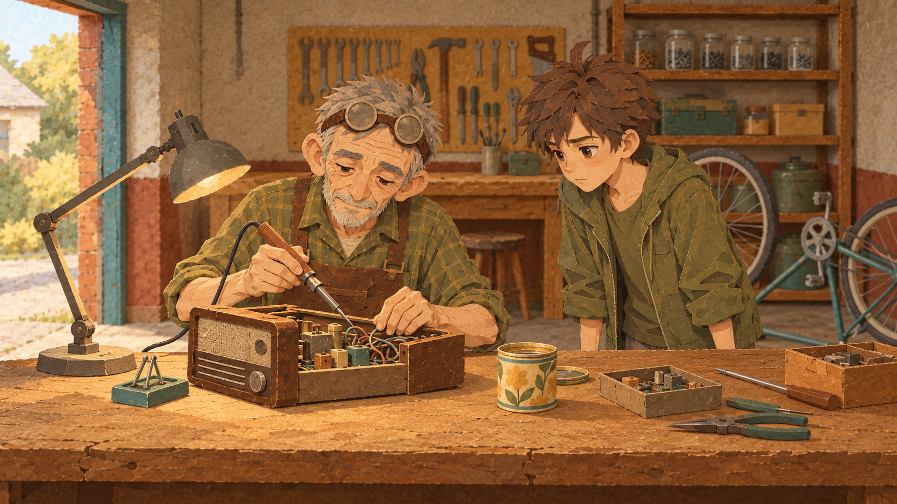
e5_garage · 1672×941 · A
Лица крупные, дед и паяльник узнаваемы; Саша в оливковой куртке. Добавлены жестяная банка и инструменты; дальний фон мягче лиц.

e5_burn · 1672×941 · A
Тот же гараж, одежда и герои, Саша отдёрнул руку. Паяльник на подставке, следов ожога нет; обе кисти подняты, вместо одной.
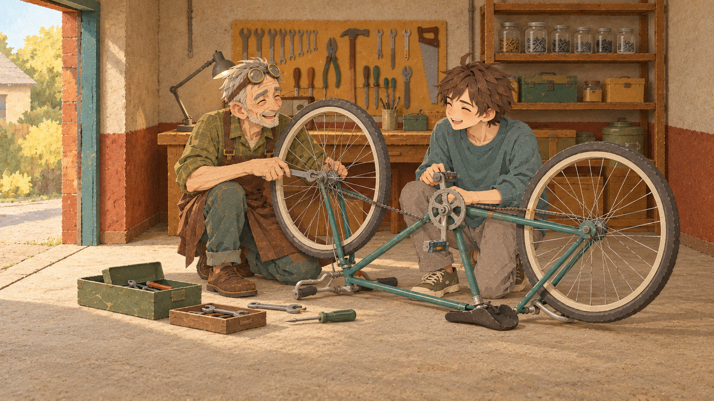
e5_sundays · 1672×941 · B
Дед и Саша15 смеются за ремонтом перевёрнутого велосипеда, лица и одежда узнаваемы. Два колеса, инструменты на полу; нижняя полоса в основном спокойная.
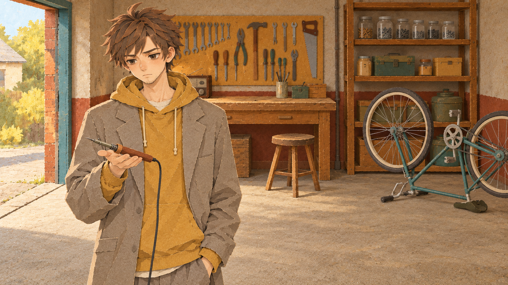
e5_spring_2011 · 1672×941 · A
Саша18, паяльник на ладони, пустой табурет читаются. Добавлен серый пиджак поверх горчичной толстовки, вторая рука в кармане.
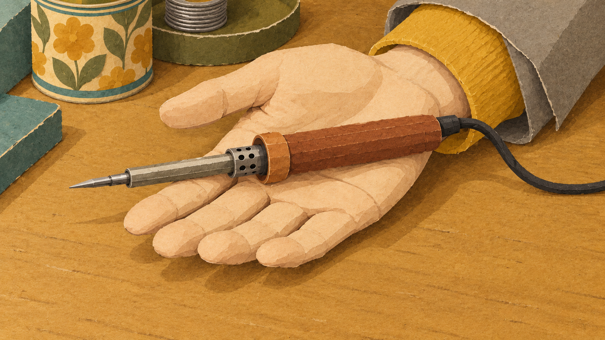
e5_iron_palm_cu · 1672×941 · A
Паяльник и ладонь крупно, чёткие детали, горчичный манжет и серый пиджак совпадают с предыдущим кадром. В углы попали банка, припой и край подставки.
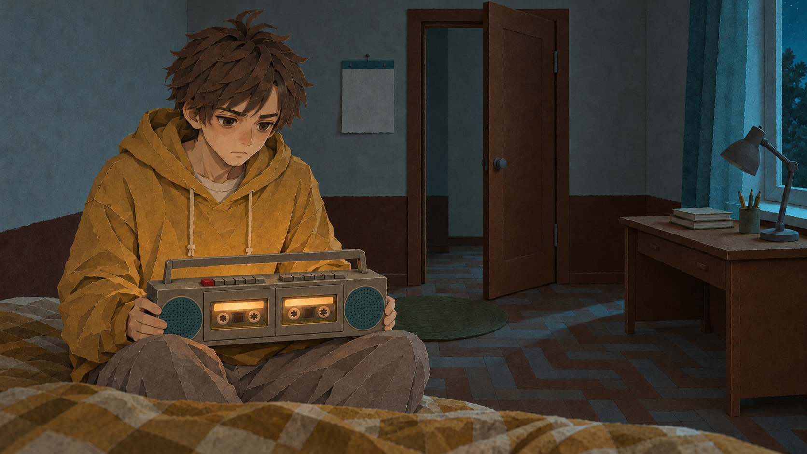
e5_night_tape · 1672×941 · A
Саша18 на кровати, лампа выключена, двухкассетник с верхними кнопками и одной красной клавишей совпадает. Лицо и предмет выше75%, нижняя полоса занята одеялом.
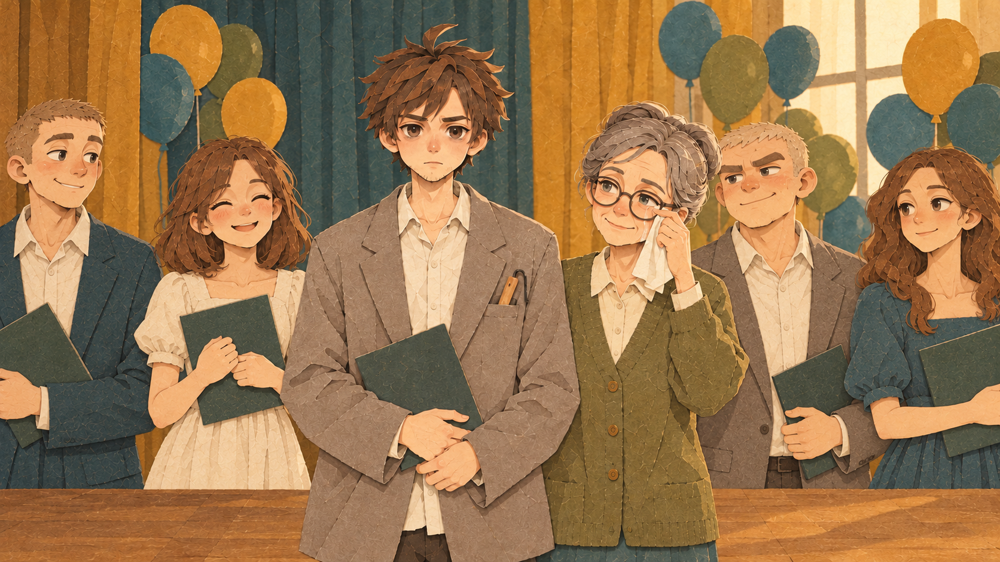
m_graduation · 1672×941 · A
Исправленный школьный выпускной: обычные костюмы и платья, без мантий и академических шапочек. Лица Саши и учительницы, паяльник в кармане сохранены.

m_dimka_phone · 1672×941 · A
Димка19 звонит, Саша19 улыбается, лица крупные. В витрину перенесены компьютер, кружки и паяльник с предметного референса; надписей нет.

m_kostya_car · 1672×941 · A
Угловатый старый хэтчбек, Костя25 со щетиной за рулём, Саша20 рядом; тополя нет. У Саши добавлен серый пиджак, перед машины кадрирован справа.
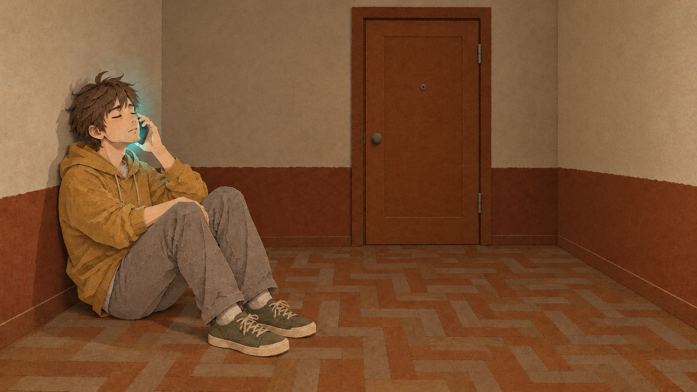
m_varya_call · 1672×941 · A
Исправленный звонок2015: Саша с закрытыми глазами у стены настоящей прихожей, фон без стола и окна, дверь закрыта. Лицо, жест и одежда сохранены.